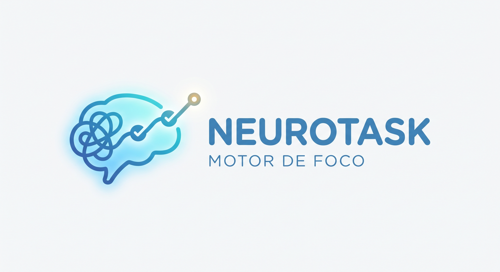

9:41
DAM — ITU UNCuyo

NEUROTASK
MOTOR DE FOCO
Transformá el caos de ideas en un camino lógico y sereno.
Tocá el cerebrito o el botón para iniciar
Descompresión Cognitiva
¿Qué ronda por tu cabeza?
Escribí o dictá libremente. El sistema descompondrá el camino lógico.
Cargar ejemplo rápido:
Escuchando dictado...
Construyendo Grafo Lógico...
Eliminando ruido cognitivo y aislando dependencias críticas...
Paso 1 de 3
Estás enfocado en esto ahora:
Backend & Integración
🌊 Carga Moderada
Testear los endpoints en Postman y verificar respuestas JSON
Paso 1 del camino crítico. Sin dependencias activas.
00:00
| Sin apuros
🏆
¡Objetivo Cumplido!
Completaste todos los nodos del camino lógico sin sobrecarga sensorial ni parálisis por análisis.
Descompresión y Rescate Cognitivo
Elegí cómo querés continuar sin culpas ni presiones.
Mapa del Grafo (Tus ideas seguras)
Secuencia topológica calculada para hoy.
Mensaje